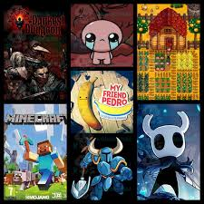

Joseph Salazar Llavilla
Estudiante de Ingeniería de Sistemas e Informática
Álbum de Fotos
Vista de la ciudad de Cusco, lugar donde nací y crecí, reconocido por su riqueza cultural y tradiciones.
Mi familia, uno de los pilares más importantes en mi vida, siempre brindándome apoyo y motivación.
Universidad Tecnológica de los Andes, donde actualmente estudio Ingeniería de Sistemas e Informática.
La programación, una de mis principales pasiones, donde desarrollo habilidades para crear páginas web y aplicaciones.
La música, especialmente la clásica y de los años 80, forma parte importante de mi día a día.

Los videojuegos despertaron mi interés por la tecnología y fueron una de las razones por las que me incliné hacia la programación.
El anime, una influencia importante en mi vida, que conocí gracias a mis hermanas y que sigue siendo parte de mis intereses.

pasatiempo personal .